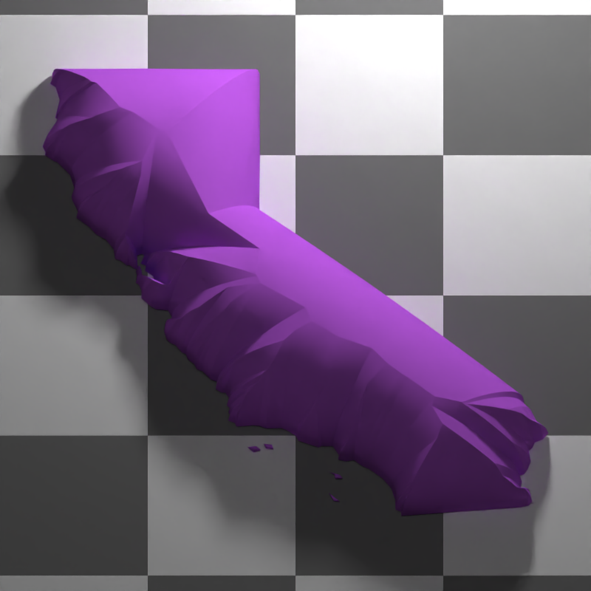
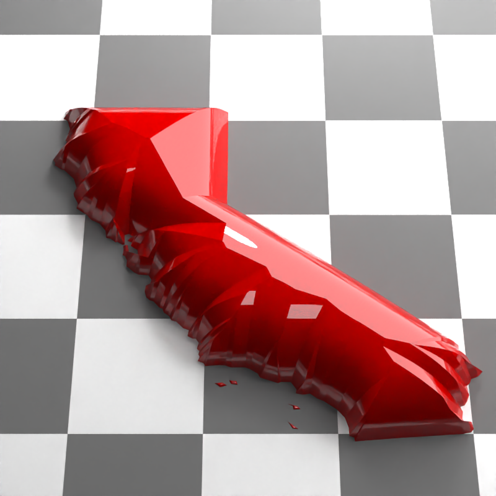

This function generates a beveled 3D polygon model from the modified straight skeleton with pre-existing polygons generated from the `generate_beveled_polygon` function when `return_skeleton_polygons = TRUE`.
Usage
change_polygon_bevel(
skeleton_polygons,
bevel_offsets = NULL,
bevel_heights = NULL,
set_max_height = FALSE,
max_height = 1,
vertical_offset = 0,
base = TRUE,
base_height = NA,
raw_offsets = FALSE,
raw_heights = FALSE,
swap_yz = TRUE,
progress = TRUE,
sides = FALSE,
double_sided = FALSE,
scale_all_max = FALSE,
material = material_list(),
bevel_material = NA,
verbose = FALSE
)Arguments
- skeleton_polygons
Default `NULL`. A straight skeleton generated from the `generate_beveled_polygon` function when `return_skeleton_polygons = TRUE`.
- bevel_offsets
Default `NULL`. The offset(s) of the bevel.
- bevel_heights
Default is set to `bevel_offsets`. Numeric vector specifying the heights of the bevels. Must be of the same length as `bevel_offsets`.
- set_max_height
Default `FALSE`. A logical flag that controls whether to set the max height of the polygon based on the `max_height` argument.
- max_height
Default `1`. The maximum height of the polygon.
- vertical_offset
Default `0`. The vertical offset of the polygon.
- base
Default `TRUE`. A logical flag that controls whether to generate the bottom of the polygon.
- base_height
Default `NA`. Height of the base, defaulting to the `min(bevel_heights) + vertical_offset` .
- raw_offsets
Default `FALSE`. A logical flag indicating whether the `bevel_offsets` are already in raw format and do not need to be multiplied by the maximum time of the skeleton.
- raw_heights
Default `FALSE`. A logical flag indicating whether the `bevel_heights` are already in raw format and do not need to be multiplied by the maximum time of the skeleton.
- swap_yz
Default `TRUE`. A logical flag that controls whether to swap the y and z coordinates in the resulting mesh. If `TRUE`, the y and z coordinates will be swapped.
- progress
Default `TRUE`. Whether to display a progress bar.
- sides
Default `FALSE`. A logical flag on whether to draw the sides. This will automatically be set to `TRUE` if `base = TRUE` and the `base_height` is less than `vertical_offset`.
- double_sided
Default `FALSE`. A logical flag that controls whether the polygon should be double-sided.
- scale_all_max
Default `FALSE`. If passing in a list of multiple skeletons with polygons, whether to scale each polygon to the overall max height, or whether to scale each max height to the maximum internal distance in the polygon.
- material
Default `material_list()`. Interface to set the color/appearance/material options for the resulting `ray_mesh` mesh.
- bevel_material
Default `NA`, uses the material specified in `material`. Interface to set the color/appearance/material options for the resulting `ray_mesh` bevel mesh.
- verbose
Default `FALSE`. A logical flag to control whether additional timing information should be displayed.
Examples
# Skeletonize a complex {sf} object and set return_skeleton_polygons = TRUE in
# generate_beveled_polygon(). This returns skeleton object with polygons included, which
# allows for quickly generating 3D models with different bevels.
if(run_docs_raybevel()) {
library(rayrender)
library(rayvertex)
us_states = spData::us_states
cali = us_states[us_states$NAME == "California",]
cali_skeleton = skeletonize(cali)
plot_skeleton(cali_skeleton)
# We add manual offsets to ensure that the polygon can be morphed all along its interior
bevel = generate_bevel(manual_offsets = seq(0,1,by=0.01), max_height=0.5)
bevel_model_cali = generate_beveled_polygon(cali_skeleton,
bevel_offsets = bevel,
return_skeleton_polygons = TRUE)
bevel_new = change_polygon_bevel(bevel_model_cali,
bevel_offsets = generate_bevel(max_height=0.5,
bevel_end=0.5)) |>
center_mesh()
scene_base = xz_rect(xwidth=100,zwidth=100,
material=diffuse(color="grey20", checkercolor="white")) |>
add_object(sphere(y=8,z=10,x=-3,material=light(intensity=100))) |>
add_object(sphere(y=800,z=10,x=-3,radius=100,material=light(intensity=5)))
raymesh_model(bevel_new, y=0.5, override_material = TRUE,
material = diffuse(color="purple")) |>
add_object(scene_base) |>
render_scene(lookfrom=c(0,30,-10), sample_method = "sobol_blue",clamp_value = 10,
width=800,height=800,fov=0,ortho_dimensions=c(12,12))
}
#>
#> Attaching package: ‘rayvertex’
#> The following objects are masked from ‘package:rayrender’:
#>
#> r_obj, run_documentation
# Change to a smooth bevel
if(run_docs_raybevel()) {
new_bevel = generate_bevel("circular", bevel_start = 0, bevel_end=1)
bevel_new = change_polygon_bevel(bevel_model_cali,
bevel_offsets = new_bevel, solid ) |>
center_mesh()
raymesh_model(bevel_new, override_material = TRUE, y=1,material = diffuse(color="purple")) |>
add_object(scene_base) |>
render_scene(lookfrom=c(0,30,-10), sample_method = "sobol_blue",clamp_value = 10,
width=800,height=800,fov=0,ortho_dimensions=c(12,12))
}

# Make a complex bevel
if(run_docs_raybevel()) {
complex_coords = generate_complex_bevel(
bevel_type = c("angled","flat", "angled", "flat"),
bevel_start = head(seq(0,1,by=0.05),-1),
bevel_end = tail(seq(0,1,by=0.05),-1),
overall_height = 1,
angle = c(45,45,15,15),
reverse = c(FALSE, FALSE,TRUE,TRUE),
plot_bevel = TRUE
)
bevel_new = change_polygon_bevel(bevel_model_cali,
bevel_offsets = complex_coords) |>
center_mesh()
raymesh_model(bevel_new, override_material = TRUE, y=1,material = diffuse(color="purple")) |>
add_object(scene_base) |>
render_scene(lookfrom=c(0,30,-20), sample_method = "sobol_blue",clamp_value = 10,
width=800,height=800,fov=0,ortho_dimensions=c(12,12))
}
# Quickly generate new bevels to inflate California like a balloon using the arctan function.
if(run_docs_raybevel()) {
inflate_california = function(magnitudes) {
for(val in magnitudes) {
bevel_new = change_polygon_bevel(bevel_model_cali,
bevel_heights = 1/2*atan(seq(0,val,length.out=100)),
bevel_offsets = seq(0,1, length.out=100),
base = TRUE) |>
translate_mesh(c(-120.49,0,-38.72))
raymesh_model(bevel_new, y = 0, override_material = TRUE,
material = glossy(color="darkred")) |>
add_object(scene_base) |>
add_object(sphere(x=-30,z=30,y=18,radius=30,material=light(color="white", intensity=5))) |>
render_scene(lookfrom=c(-1, 28, -20.32), lookat=c(-1, 1.46, -2),
sample_method = "sobol_blue", clamp_value = 10,
width=800,height=800,fov=20,samples=256)
}
}
inflate_california(c(1,4,16,64))
}
